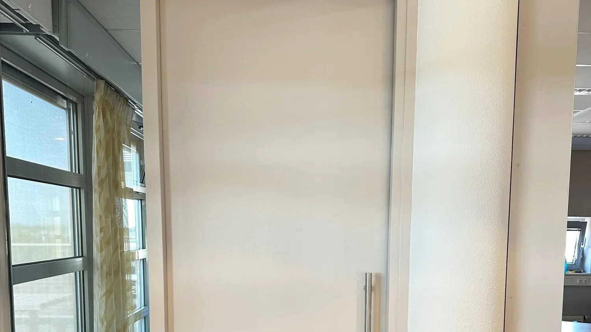
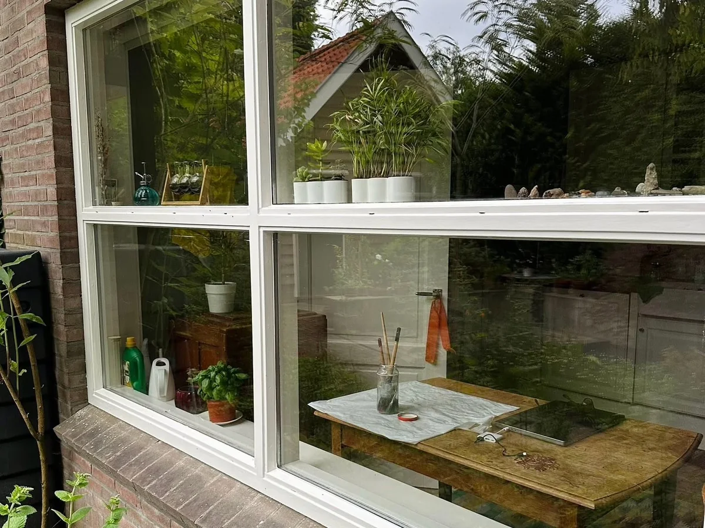

Het voorwerk is het werk
Verf kopen kan iedereen. Het verschil zit in wat eraan voorafgaat: ontvetten, schuren, gaatjes dichtzetten, afplakken. Daar gaan de uren in zitten en daar wordt een klus later op afgerekend. Stucwerk en egaliseren doe ik niet; dit is schilderwerk.

Binnenschilderwerk
Binnen schilderen is voor een groot deel voorbereiding. Ontvetten, schuren, kleine gaatjes dichtzetten, afplakken. Dat ziet u later niet terug, maar juist daar zit het verschil tussen een muur die twee jaar mooi blijft en een die tien jaar mooi blijft. Meubels en vloeren dek ik af, en aan het eind staat alles weer zoals het stond.
- Wand- en plafondschilderwerk
- Deuren, kozijnen en ander houtwerk
- Trappen en trapgangen
- Alles afgedekt, aan het eind weer opgeruimd

Buitenschilderwerk
Buitenwerk gaat kapot op de plekken waar water blijft staan: onderdorpels, hoeken van kozijnen, de onderkant van een deur. Verf daaroverheen zetten lost niets op. Aangetast hout haal ik eerst weg en herstel ik, daarna komen de grondverf en de lak. Anders staat u over twee jaar weer op dezelfde plek.
- Kozijnen, deuren en boeidelen
- Kleine houtreparaties voordat er verf op gaat
- Verf die past bij hout dat buiten staat
- Woningen, bedrijfspanden en praktijkruimtes
Twee van de vier
Behangen en houtwerk
Los te doen, en vaak onderdeel van dezelfde planning.
Niet zeker wat u nodig heeft
Dat hoeft ook niet. Stuur een paar foto's of laat mij even langskomen, dan hoort u wat er nodig is en wat kan blijven.
Ik bel u om een moment af te spreken. Stuur gerust alvast een paar foto's van de ruimte, dan kan ik meteen meedenken. In deze voorbeeldpagina gaat er nog niets echt de deur uit.
Liever meteen contact
Bel of app mij gerust. Een paar foto's van de ruimte zeggen vaak al genoeg om te weten waar het over gaat.
- Telefoon
- 06 83 04 41 91
- 06 83 04 41 91
- aribouw10@gmail.com
- Adres
- Mommenkamp 27, 6932 HT Westervoort
- Werkgebied
- Westervoort, Arnhem, Nijmegen en omgeving
- Reviews
- 5,0 op Werkspot